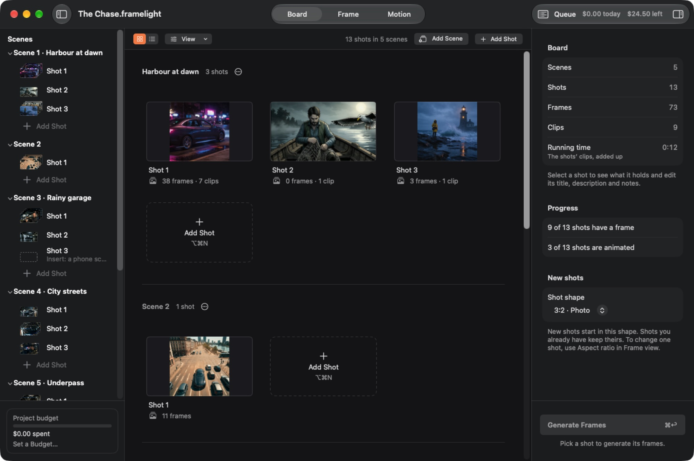
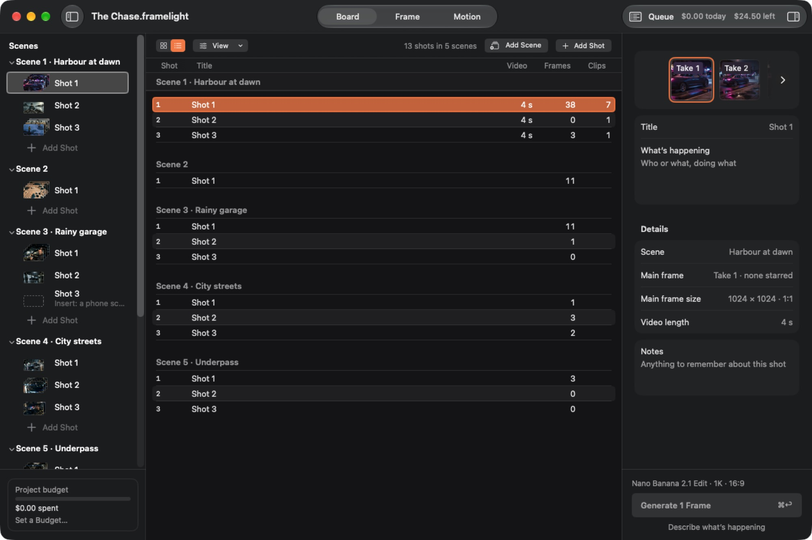
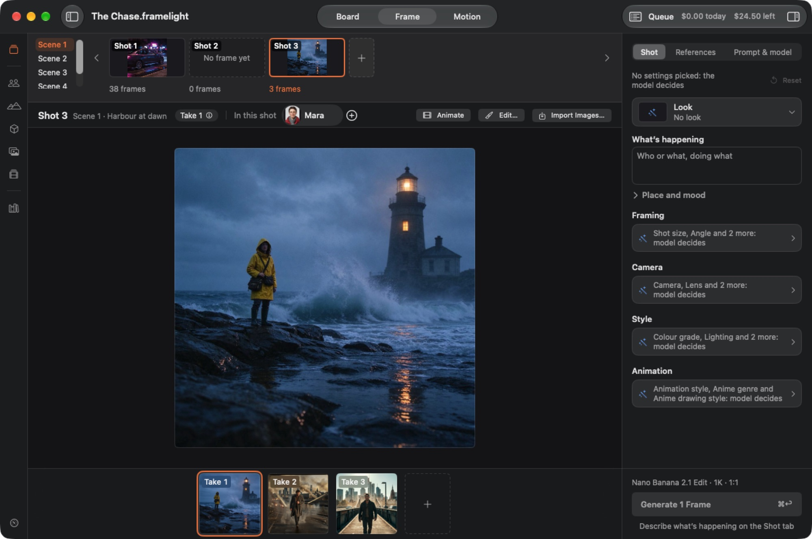
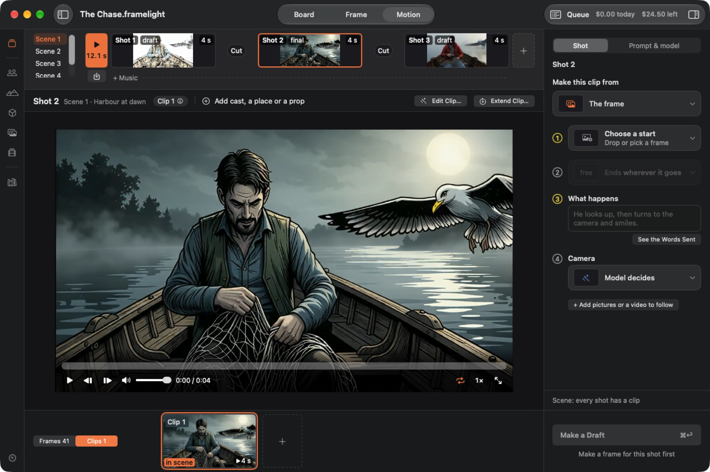
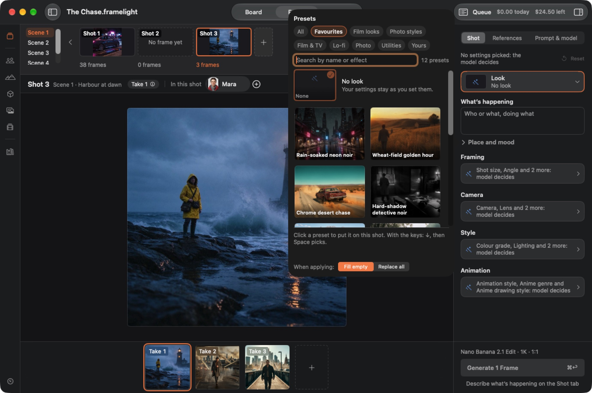

Board: write the film
Scenes and shots in order. Say what each shot shows, or import a shot list you already have.
- Your cast, places and props in one Library
- Bring your own pictures and videos in as shots
For the Mac
Describe each shot, make its frame, turn it into a clip, add voices and music, and play the whole scene. Framelight runs on your own fal.ai account, so you pay only for what you make.

How it works
Three views, one after the other. Each shot keeps its takes, so you can always go back to the one you liked.
Scenes and shots in order. Say what each shot shows, or import a shot list you already have.

Generate the still for a shot. The same people, places and props come back from shot to shot, so the film looks like one film.

Turn a frame into a clip, add lines for your characters and music under the scene, and play it from the first shot to the last.

Looks
38 ready-made presets and over 200 looks, from film stocks to lighting. Click one and the whole shot takes it on. A look only changes the style; it never adds things to your picture.

Made to be clear
Every Make button shows what it costs. Give a project a budget and see what's left.
Image, video and voice models on fal.ai, picked for quality. Framelight chooses a good one for each job; you can change it.
No account, no server, no tracking. Projects are files you save where you like.
Every change can be undone, and every made picture and clip stays in its shot until you remove it.
Price
A free download. Try everything for 7 days, then buy once.
Framelight never sells credits and takes no share. You need a free fal.ai account and a key; the app shows you how in three steps (or read them here).
macOS 15 Sequoia or later, on Apple silicon and Intel Macs.
fal.ai runs the AI models that make the pictures, clips and voices. With your own account you pay its prices directly, with nothing added, and you can see every charge on fal.ai.
Yes. Planning, importing your own pictures and videos, trimming, playing and saving a scene as a film all work without fal.ai, before and after the trial.
The Make buttons ask you to buy Framelight. Your projects stay yours: you can open, play and save them as films any time.
You do, under fal.ai's terms and each model's licence. Framelight claims nothing.
No. There is no Framelight server. Your key stays in your Mac's Keychain and goes only to fal.ai. See the privacy policy.